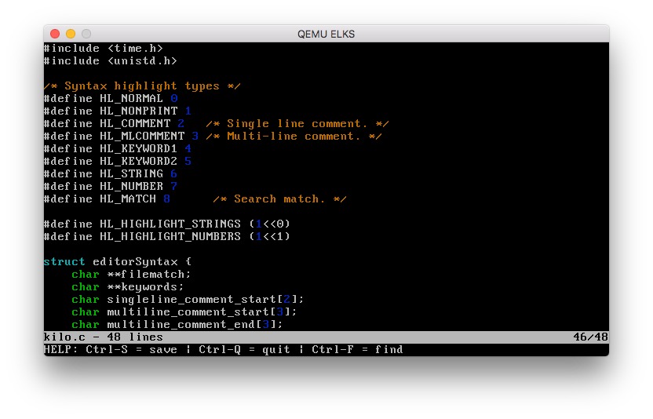

The Kilo editor Kilo
is is an easy to use command line text editor that is included in
ELKS. Its interface is comparable to GUI-based text editors, which
makes it a good choice for those who find Unlike
Opening and Creating FilesTo open an existing file or to create a new file, type kilo followed by the file name. This opens a new editor window, and you can start editing the file.  Search TextTo search for text in a document, use CTRL+f. This will open a search prompt where you can enter the search string. Do not press enter, use the cursor keys to move to the next occurrence of the string or move back to the previous one. Press ESC to exit the search function. SaveTo save your work, use CTRL+s. This will save the document and leave kilo open for you to continue working. ExitUse CTRL+q to exit kilo. If you have not saved your work, you will be prompted to enter CTRL+q several times to exit. A screencast is available here: https://asciinema.org/a/90r2i9bq8po03nazhqtsifksb DevelopmentKilo does not depend on any library (not even curses). It uses fairly standard VT100 (and similar terminals) escape sequences. Kilo was written by Salvatore Sanfilippo aka antirez and is released under the BSD 2 clause license. It is available on GitHub: https://github.com/antirez/kilo Here is a blog post by Salvatore Sanfilippo about the development of kilo: http://antirez.com/news/108 If
you want to get to know the code of Kilo in detail and develop
additional features for it, here is an extensive tutorial covering
the Kilo
code: ELKS port of KiloGreg Haerr ported Kilo to ELKS.
Here are notes from his original commit: |